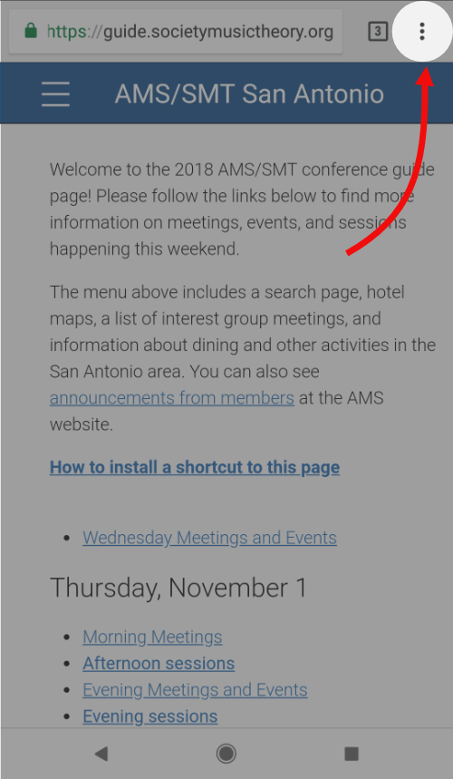
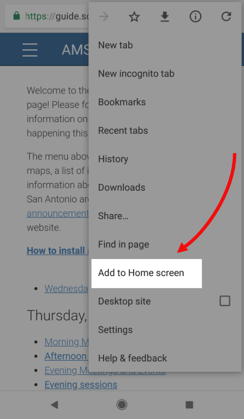
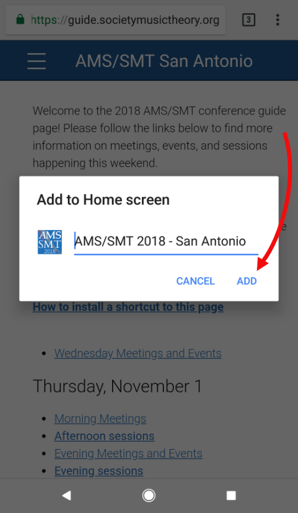
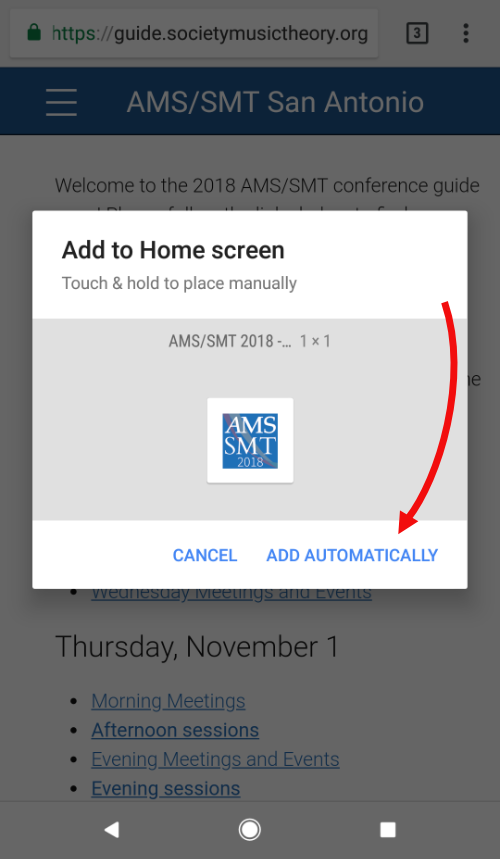

1. Go to the home page.
2. Tap the three vertical dots in the top right-hand corner of your browser.
3. Tap "Add to Home Screen" in the pop-up menu.
4. Give your shortcut a name (or use the default), then tap "Add."
5. Place your shortcut on your homescreen, or tap "Add automatically" to let the system place it for you.
